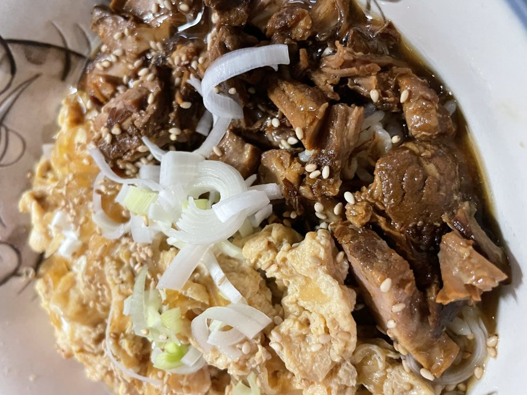
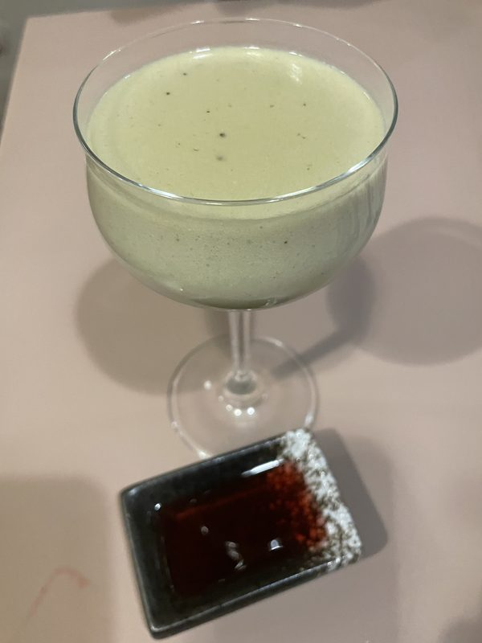

KUCHNIA JAPOŃSKA · STARE MIASTO TORUNIA
Japanese Ramen Bar · Toruń, Poland
こだわりの麺、至福の一杯
Bulion, który z każdą chwilą nabiera głębi.
Sprężysty, delikatny. Szef kuchni z Japonii • Ręcznie robiony makaron.
Wabi Navi 和美なび to japońska restauracja położona w samym sercu toruńskiej Starówki.
W lipcu 2017 roku trójka Japończyków połączyła siły, aby otworzyć pierwszy w Toruniu lokal specjalizujący się w rāmenie. Nazwa Wabi Navi jest połączeniem japońskiego pojęcia estetycznego „wabi-sabi” oraz słowa „navigation” – nawigacja. Wyraża naszą ideę odkrywania piękna i wartości w prostych, codziennych rzeczach.
Podstawą naszego rāmenu jest sprężysty makaron własnej produkcji oraz aromatyczny wywar przygotowywany przez wiele godzin. Oprócz różnych rodzajów rāmenu serwujemy również popularne japońskie dania i przekąski, takie jak gyōza czy takoyaki.
Jeśli tęsknią Państwo za japońską kuchnią albo chcą na chwilę odpocząć podczas podróży, serdecznie zapraszamy do Wabi Navi. Właściciel wraz z całym zespołem z przyjemnością Państwa ugości.
Craft
Makaron wyrabiany ręcznie każdego ranka
Soul
Bulion gotowany całą dobę według japońskich receptur
Harmony
Japońska gościnność omotenashi w sercu Torunia


Zapraszamy na niezapomniane doświadczenie ramen w historycznym sercu Torunia. Rezerwacja zalecana w weekendy.